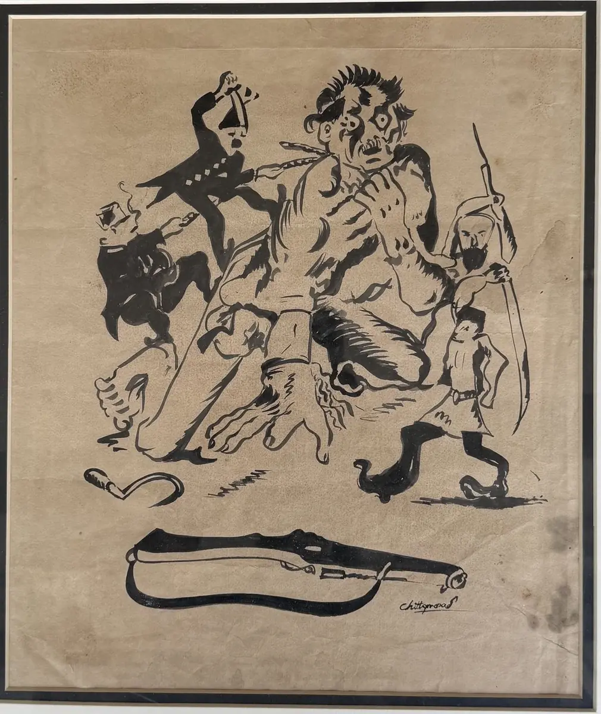

The collection · Artist of conscience
Chittaprosad
1915–1978
Self-taught and fearless, he drew for the people, and became the conscience of Bengal's art in the 1940s.

The Overthrow
Ink on paper
His life
- 1915Born in Bengal
- 1943Draws the Bengal famine for the political press
- 1978Dies in Calcutta
Swipe along the thread
His story
Drawing for the people
Chittaprosad Bhattacharya had no formal training. He joined the national movement as a student and, in the 1940s, drew for the political press.
During the famine of 1943 he walked through the worst-hit districts and drew what he found. Later he turned to linocuts and woodcuts that anyone could print and share, and to puppets for children. The Overthrow shows his satire at full strength.
to come
In his own words
In India an artist cannot long remain without expressing his moral and political views…
Where he stands
Artists of 1943
The famine of 1943 turned several Bengali artists towards the people's suffering.
 Alongside him
Zainul Abedin
1914–1976
Drew the famine on Calcutta's streets.
Alongside him
Zainul Abedin
1914–1976
Drew the famine on Calcutta's streets. This page
Chittaprosad
1915–1978
Self-taught and fearless, he drew for the people, and became the conscience of Bengal's art in the 1940s.
This page
Chittaprosad
1915–1978
Self-taught and fearless, he drew for the people, and became the conscience of Bengal's art in the 1940s.
In the house
Chittaprosad at House of Legends
One work in our care: The Overthrow, in ink.
Write to us
See Chittaprosad in person
Every work in the house can be seen by appointment, with its record and a condition report ready for you. If your family has kept a work by Chittaprosad, we would be glad to hear about it too.